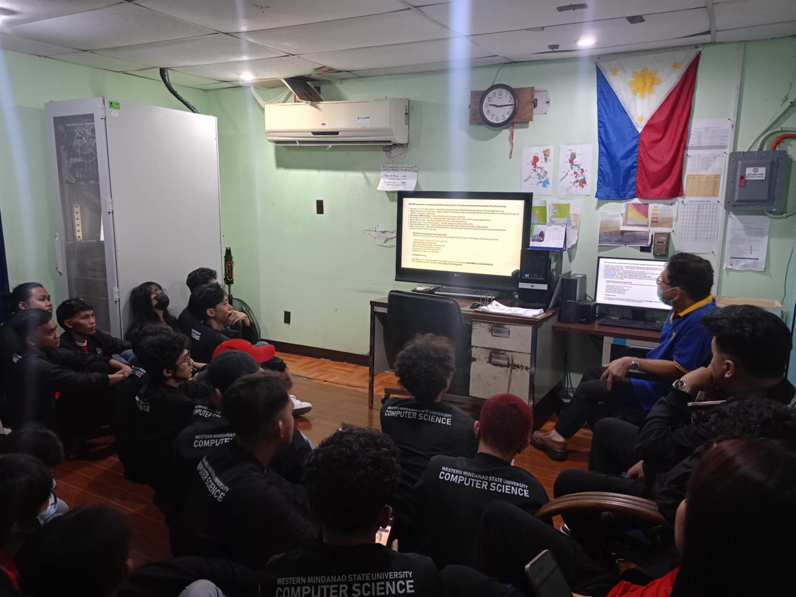

Subic Bay Freeport Zone, Day 1/5



On the official first day of our tour, we ventured to the Subic Bay Freeport Zone to immerse ourselves in a variety of educational experiences. Our first stop was the Subic Bay Exhibition and Convention Center, where we admired the stunning artwork that adorned the venue. The intricate pieces on display ranged from contemporary art to traditional Filipino designs, each telling its own story and showcasing the rich cultural heritage of the region. The center's impressive displays set a creative and inspiring tone for the rest of our day. Next, we visited the PAGASA Weather Station, where we attended an enlightening lecture by one of the operators. We gained valuable insights into the sophisticated technology and processes involved in weather forecasting and monitoring. The operator's passion and expertise were evident as he explained the tools and methods used to track weather patterns, underscoring the importance of accurate weather information in daily life and various industries.
We then proceeded to the First Aviation Academy, where we were thrilled to see multiple aircraft and state-of-the-art flight simulators. The academy provided us with a glimpse into the world of aviation training, showcasing the rigorous training and advanced technology used to prepare future pilots. Our final destination was the Vessel Traffic Management System headquarters. Here, we were greeted by an engineer who oversaw the operations of this complex and beautiful system. Witnessing the coordination and technology involved in managing vessel traffic was incredibly inspiring and highlighted the intricate work behind maritime safety and efficiency.


 On the third day of our tour, we embarked on a fascinating visit to the Light Rail Transit Authority (LRTA), where we gained insight into the meticulous management and maintenance of their carriages. Inside the maintenance hangar, we observed skilled technicians at work, ensuring the trains operated at peak performance. The control room provided a glimpse into the operational nerve center, where a giant screen displayed real-time data on track conditions and the movement of LRT trains. This experience highlighted the complex infrastructure and dedication required to maintain efficient urban transportation systems.
On the third day of our tour, we embarked on a fascinating visit to the Light Rail Transit Authority (LRTA), where we gained insight into the meticulous management and maintenance of their carriages. Inside the maintenance hangar, we observed skilled technicians at work, ensuring the trains operated at peak performance. The control room provided a glimpse into the operational nerve center, where a giant screen displayed real-time data on track conditions and the movement of LRT trains. This experience highlighted the complex infrastructure and dedication required to maintain efficient urban transportation systems.